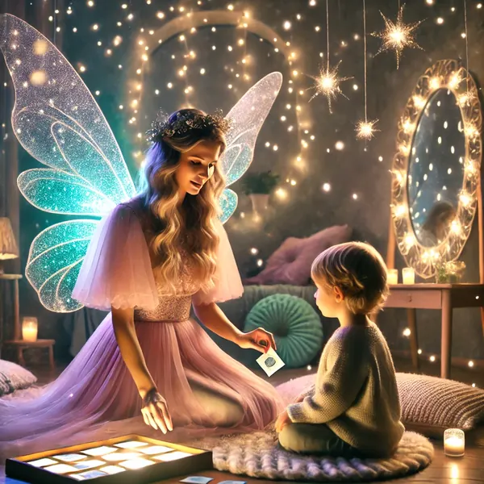
Логопед
Постановка и автоматизация звуков, развитие связной речи, расширение словаря.
от 1 900 ₽ / занятиеЦентр «Фея Речи» помогает детям заговорить чисто и уверенно: логопед, дефектолог, нейропсихолог, психолог и современные аппаратные методики — в одном месте, рядом с домом.
Перезвоним в течение рабочего дня и подберём удобное время
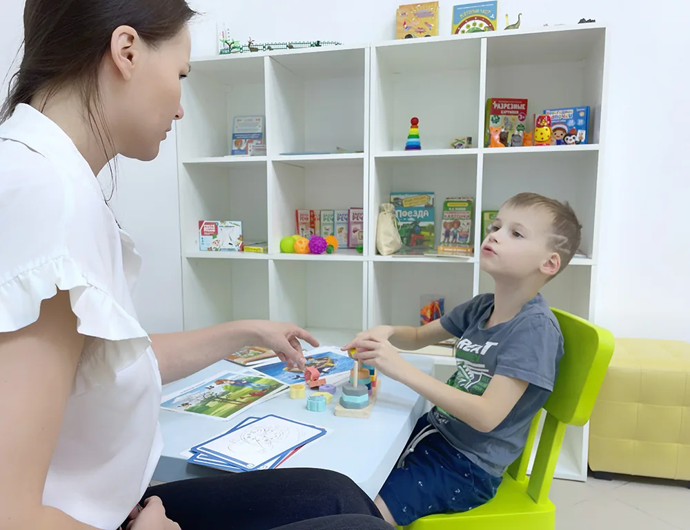
«Фея Речи» — сеть детских логопедических центров в Санкт-Петербурге. У нас работают логопеды, дефектологи, нейропсихологи и психологи, которые поддерживают развитие речи и общения у детей.
Мы выявляем и корректируем задержку речевого развития, нарушения звукопроизношения, заикание, бедный словарный запас и другие трудности. Для каждого ребёнка разрабатываем индивидуальную программу коррекции — ту, что эффективна именно в его случае.
В центрах проходят индивидуальные и групповые занятия. Есть современное оборудование и материалы: аппаратные методики Tomatis и Баламетрикс, сенсорное оборудование, логопедические зонды, игровые пособия.
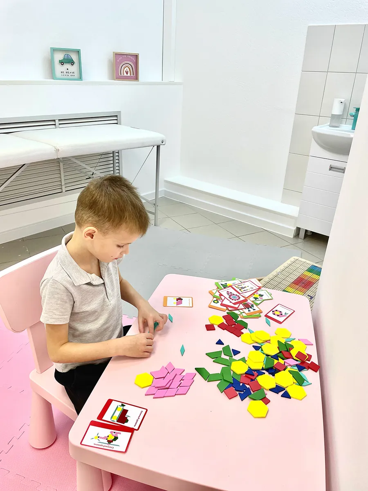
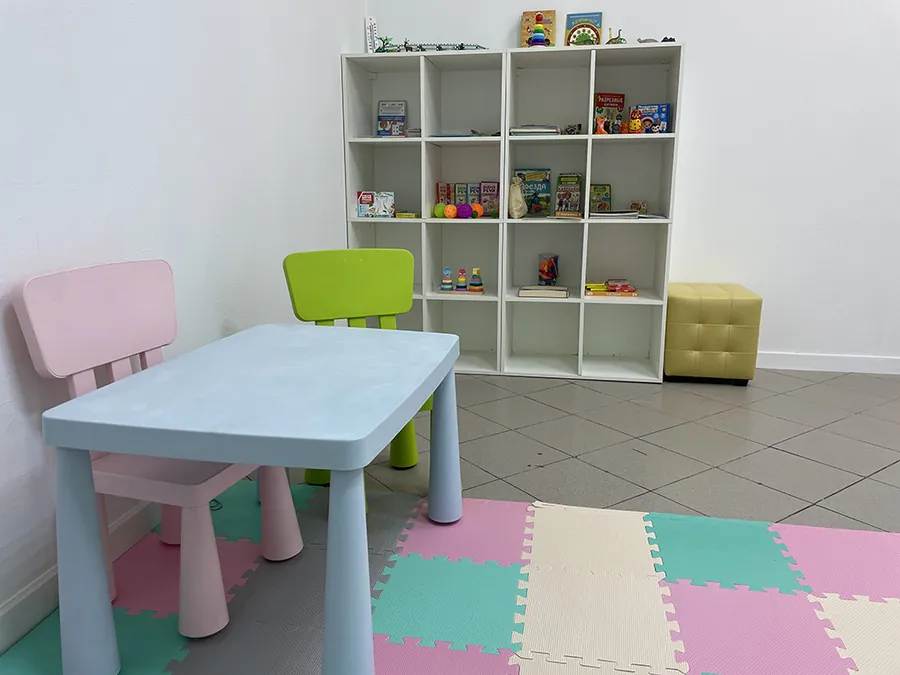
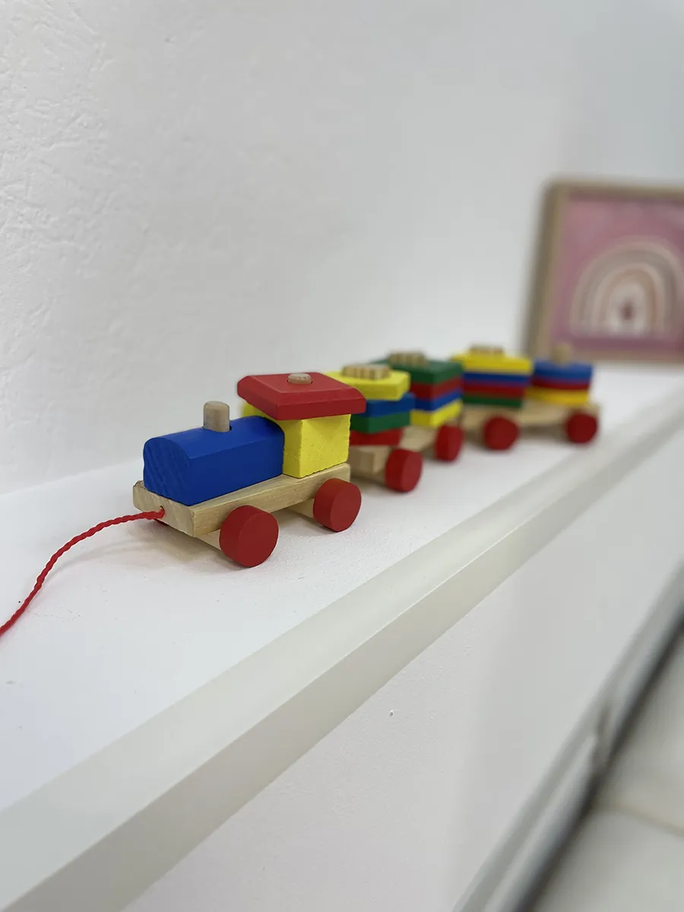
Пятнадцать направлений под одной крышей: логопед, дефектолог, нейропсихолог, психолог, запуск речи, Tomatis. Ребёнку не нужно ездить по разным специалистам в разные концы города.

Постановка и автоматизация звуков, развитие связной речи, расширение словаря.
от 1 900 ₽ / занятие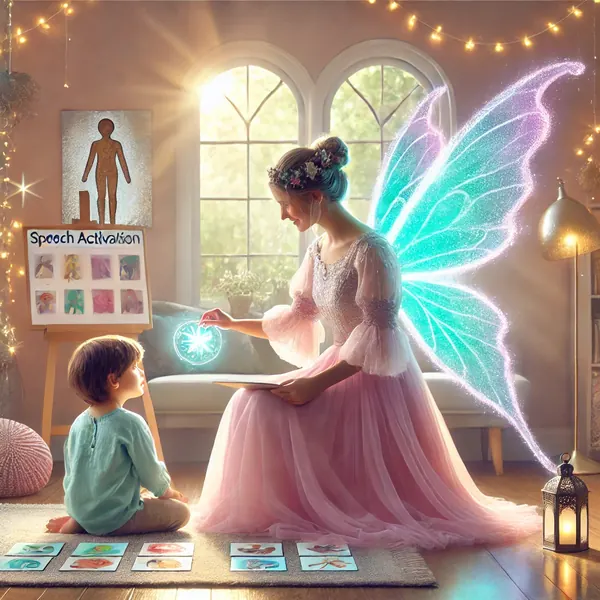
Для неговорящих малышей: вызываем первые слова и переводим их в фразу.
от 2 200 ₽ / занятие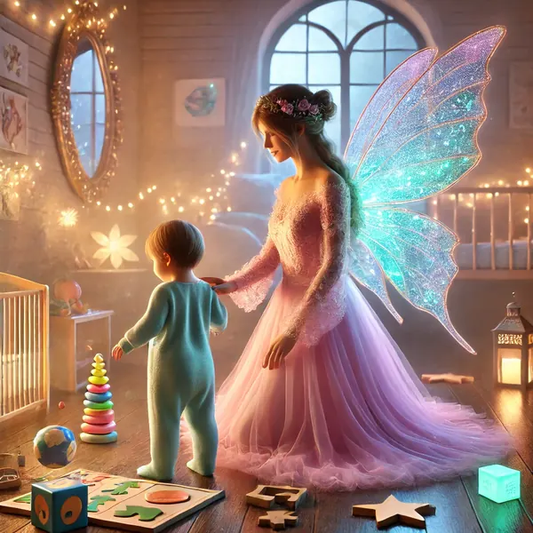
Развитие внимания, памяти, мышления и познавательной активности ребёнка.
от 2 700 ₽ / занятие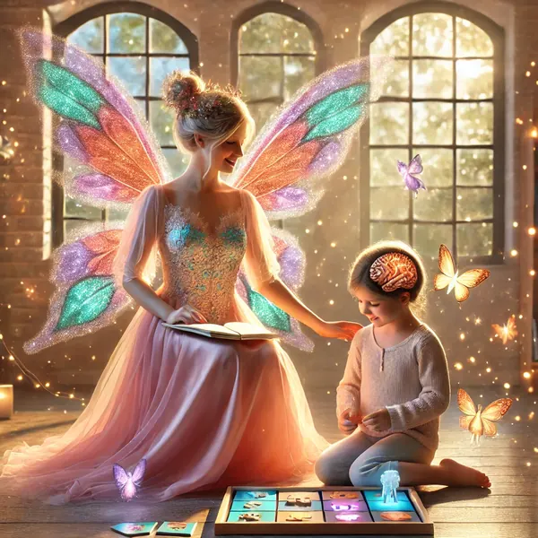
Работаем с основой: саморегуляция, межполушарное взаимодействие, обучаемость.
от 2 850 ₽ / занятиеСтимуляция мышц артикуляционного аппарата — база для чистого звука.
от 1 900 ₽ / занятиеЗанятия в оборудованном сенсорном зале для детей с трудностями обработки ощущений.
от 2 100 ₽ / занятиеПоведение, тревожность, адаптация. Индивидуально и в формате семейной консультации.
от 2 850 ₽ / занятиеАудио-вокальная тренировка: слуховое внимание, восприятие речи, концентрация.
пробное занятие 1 100 ₽Мозжечковая стимуляция на балансировочной доске — равновесие, координация, речь.
интенсив 3 недели«Малышкина школа»: чтение, счёт, письмо и усидчивость — два урока с переменой.
от 2 200 ₽ / занятиеАдаптивная физкультура и общая подготовка — тело как опора для развития речи.
от 1 900 ₽ / занятие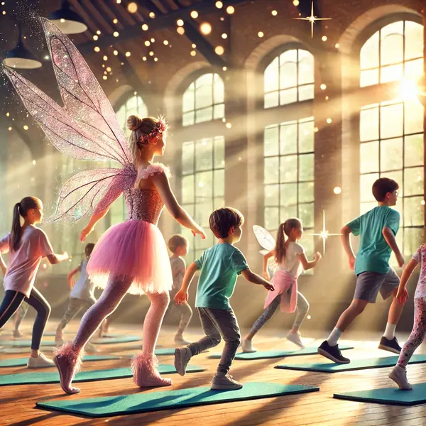
Мини-группы 4–6 человек: запуск речи, АФК, ОФП. Первое пробное — бесплатно.
от 1 000 ₽ / занятиеТакже: логопедическое тейпирование, коррекция заикания, миофункциональная коррекция, UpMIND+, нейроинтенсивы.
Основные причины обратиться к логопеду именно у нас
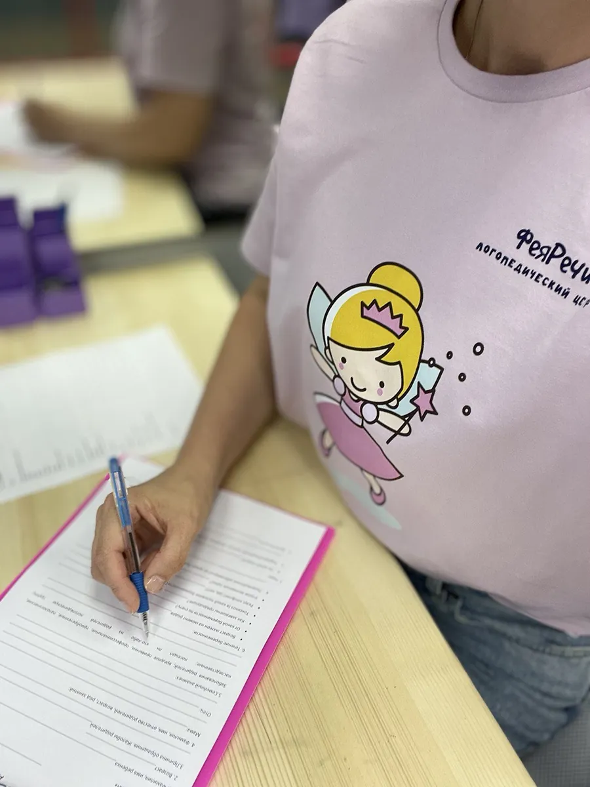
На старте важно определить уровень речевого развития ребёнка, чтобы выстроить прочный фундамент для дальнейшего успеха. Грамотная диагностика выявляет индивидуальные особенности и позволяет собрать программу, которая действительно работает.
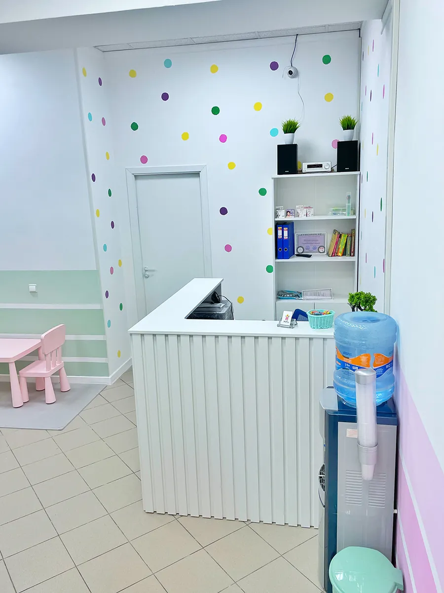
Наши специалисты нацелены на результат и используют проверенные методики, подбирая подход для каждого ребёнка и его родителей. Индивидуальный формат и дружелюбная атмосфера помогают быстро увидеть реальные изменения.
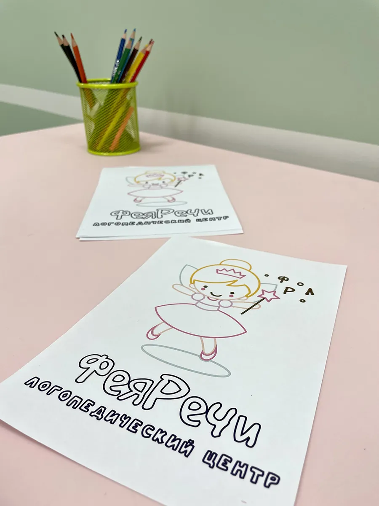
Мы объединили проверенные методики и игровые технологии, чтобы каждое занятие превращалось в приключение. Специалисты не сидят за столом — они вовлекают ребёнка через творчество, движение и живое взаимодействие.
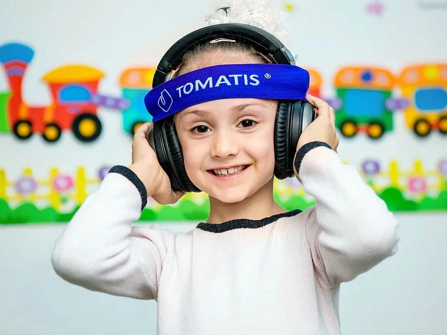
Tomatis®, UpMIND+, Баламетрикс, функциональная аппликация, сенсорное оборудование. Сочетание методик развивает не только речь, но и память, внимание и мышление — прогресс становится устойчивым.
Оценка речевых навыков — вместе с родителем, от 60 до 180 минут в зависимости от возраста и запроса.
Специалист устанавливает контакт с ребёнком и собирает историю здоровья и развития.
Оцениваем речь и сопутствующие навыки, определяем причины трудностей — не только следствия.
Подробно объясняем, что происходит с речью ребёнка и какие способы помощи подходят именно вам.
Подбираем направления, формат и количество занятий. Отвечаем на все вопросы.
Разовые занятия и абонементы. По абонементу стоимость одного занятия ниже.
Полный прайс со всеми направлениями и абонементами — на странице «Цены» основного сайта.
Ведущие логопеды, дефектологи и нейропсихологи центра — с профильным образованием и практикой в коррекции речи.
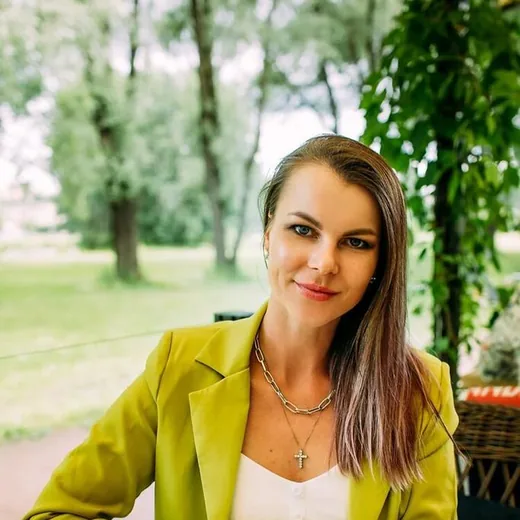
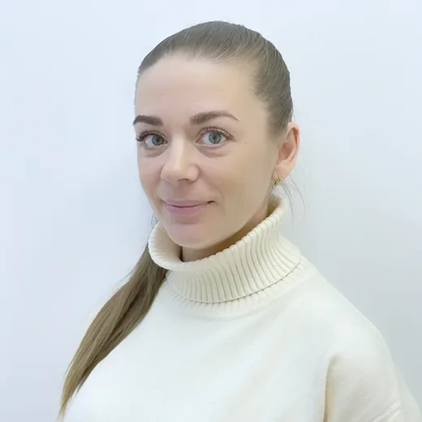
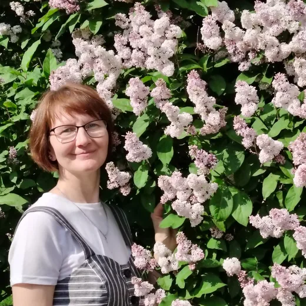
Отзывы семей, которые прошли с нами путь от первых слов до чистой речи.
Мы работали с педагогом Мариной Алексеевной. Она очень быстро нашла к дочке подход. Звук «р» дочка стала выговаривать уже на третьем занятии — я даже не ожидала, что это так быстро произойдёт. Ребёнок с удовольствием бежал на занятия, дома выполняла домашние задания без напоминаний. Замечательный центр!
Отличный центр для развития речи ребёнка! Профессиональный подход, занятия в игровой форме. Моей дочке ставили шипящие и «р» — всего два месяца интенсивных занятий, и речь изменилась кардинально. К тому же она столько стишков выучила. Спасибо логопеду Анне Витальевне, каждое занятие что-то новенькое! Рекомендую.
Долго выбирала логопеда для дочки, но остановились на «Фее речи». Не хотелось, чтобы занятия сводились к развивашкам за письменным столом — здесь используют и сенсорные игры, и ролевые, и двигательную активность. Начали в 2,5 года, когда дочка почти не говорила. За два месяца прогресс был удивительный: запустилась речь и заметно изменилось поведение — она словно начала открываться миру.
Милана с большим удовольствием посещает «Фею речи». Ходим на логоритмику! Очень доброжелательный коллектив. Спасибо большое!
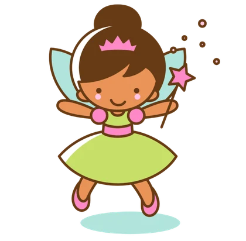
Центр «Фея Речи» имеет лицензию на образовательную деятельность. Она позволяет нам проводить дополнительное образование детей и взрослых и подтверждает квалификацию и правовой статус центра.
Оставьте имя и телефон — администратор перезвонит, ответит на вопросы и подберёт удобное время в ближайшем к вам центре: на Проспекте Славы или в Кудрово.
Или позвоните сразу: +7 (812) 660-77-10
Два центра — на юге Петербурга и в Кудрово. Выберите тот, что ближе к дому.
Проспект Славы, 52, к. 1
Улица Областная, 7